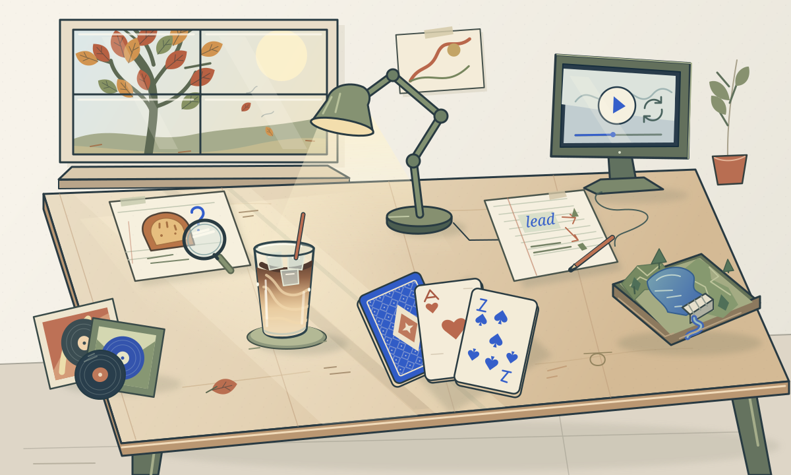
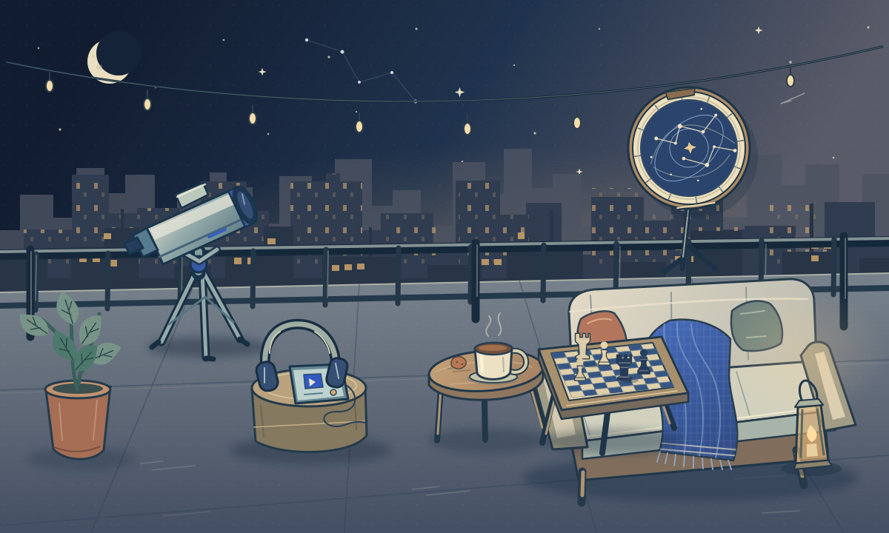
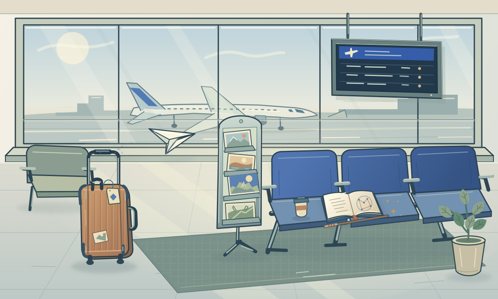
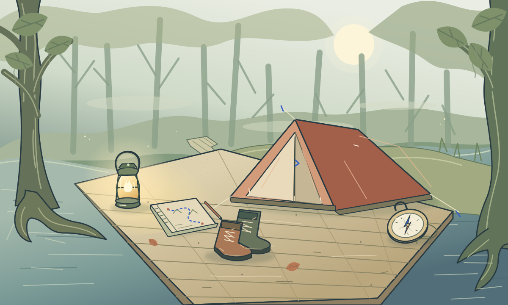
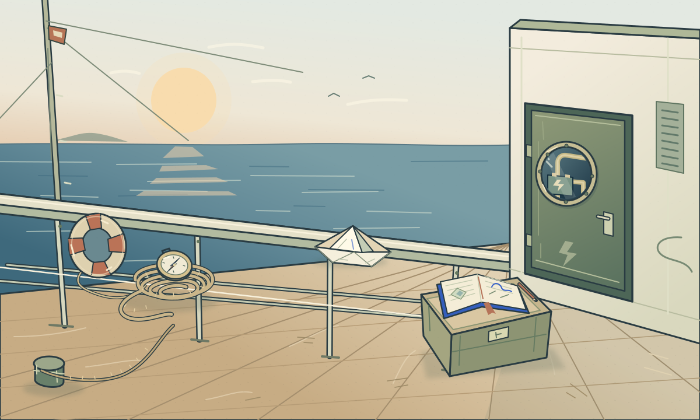

Rayan Khan / A small detour
Five places. No itinerary.

There’s no particular order.
The interactive scenes need JavaScript. A few pieces of me: coffee-making on morning shifts, chess and cards with friends, exchanges in Japan and Wisconsin, three nights in a swamp forest, and a fifteen-day cruise before high school. Fall is my favorite season.




A little ritual
Start with the ice.
Starbucks training had me making shaken espresso, refreshers, matcha and americanos. This is the brown-sugar oatmilk one: ice, espresso, shake, milk. Some things I learned have a very different kind of lab bench.
A tiny table game
Find the three pairs.
Pick two. I’ll wait.
We cooked khichuri, meat and kheer for Eid, had friends over, and ended up playing UNO until 1:30 a.m. Four matches. I won two. Apparently I kept the statistics as carefully as the memory.
The question after the A
My teacher gave me an A. I had a question.
In seventh grade, a bread experiment left me wondering what the instructions hadn’t taught me to see. I went back with a microscope and a microbiology book. The bread went bad before I finished. Hey, I tried, though.
A friendly disagreement
It can help you begin something worth trying.
My friends picked every Hogwarts house except Slytherin. I asked whether ambition, calculation and pride were always bad. We started by choosing a house and ended up arguing about what circumstances do to a virtue.
The useful part of an idea
The motor needs someone to stop it.
A water-level controller in my robotics model turned out to be useful beyond the competition. I proposed adapting it for our building’s reservoir. The neighbors helped bring it to life; the part I remember best is that the idea became something we made together.
A little atmosphere
Before the rest of the day
Warm keys, a small pulse, room to think.
Sound is off. Turn it on above the scene.
Zayn was my favorite in One Direction. I liked him enough to start spelling my name ‘Rayn’ for a while. Before music became a whole collection of memories, it had already edited my name.
One more episode
Back to this one. Again.
I used to dismiss dramas. Then my sister’s enthusiasm pulled me in, and now I have favorites I return to. Knowing the ending doesn’t seem to stop me from wanting another episode.
After the city quiets
0 of 3 stars. Join the dots your way.
I wrote about how Kalpana Chawla stayed with me through childhood. Space was one of the first ways I imagined a life in research and creation. A telescope belongs here for that earlier version of me, still looking up.
A slightly competitive detour
0 hops. Take an L-shaped step toward the star.
Chess and pool both get my attention. I’m drawn to games where a small adjustment in aim or a longer look can change the result. A knight taking the long way round feels quite at home here.
A chapter away from home
Pick a place. Leave a little stamp.
Before my exchange in Osaka, Japan was a place I mostly knew through anime. Then I got to live there. It’s a strange, lovely shift when a place you’ve imagined starts supplying its own details.
A page between departures
A castle. A possibility.
My mother gave me the Harry Potter books for my sixth birthday. They became a large part of my childhood. A book is still a very efficient way to carry a much bigger world into a waiting room.
A departure with no schedule
Aim a little. Then let go.
For a robotics project, I wrote a story around a character named Samara and filmed it with friends inside our smart-city model. A story on a page became something we could build and play out together. This paper gets to become something too.
Somewhere outside
It starts with a little light.
One of my community projects was automatic stair lighting: the lights came on when someone was nearby. A sensor doing a small, considerate job. I like that kind of invention—something you can appreciate without needing its explanation first.
Questions travel
Give the boat a little push.
Before high school, I joined my father on a fifteen-day cruise. He’s a sailor, so time together has always mattered to me. We talked about family, life and the future; the horizon had plenty of room for all three.
A small troubleshooting challenge
The wire stops just short.
At Roboment, I went from learning robotics to helping other people troubleshoot their projects. A working circuit was a good start; helping someone understand it was another challenge. This little window is for the moment a connection finally makes sense.
A different direction
North. A little room to wander.
Earth- and climate-science activities took me into topographic maps, biodiversity mapping and questions about planetary boundaries. I was learning to look at a landscape for more than where I could walk next. Direction is only one thing a map can tell you.
Outside the familiar
One step outside.
One night, a friend and I played pickleball in the rain. That was the whole update I added at 9:38 p.m. Sometimes the part of a day worth keeping is just that you went outside and played anyway.
A change in the air
Some endings feel like a beginning.
Fall is my favorite season. The leaves are winding down, but something about it makes me hopeful. I don’t need the year to start over to feel like something might.